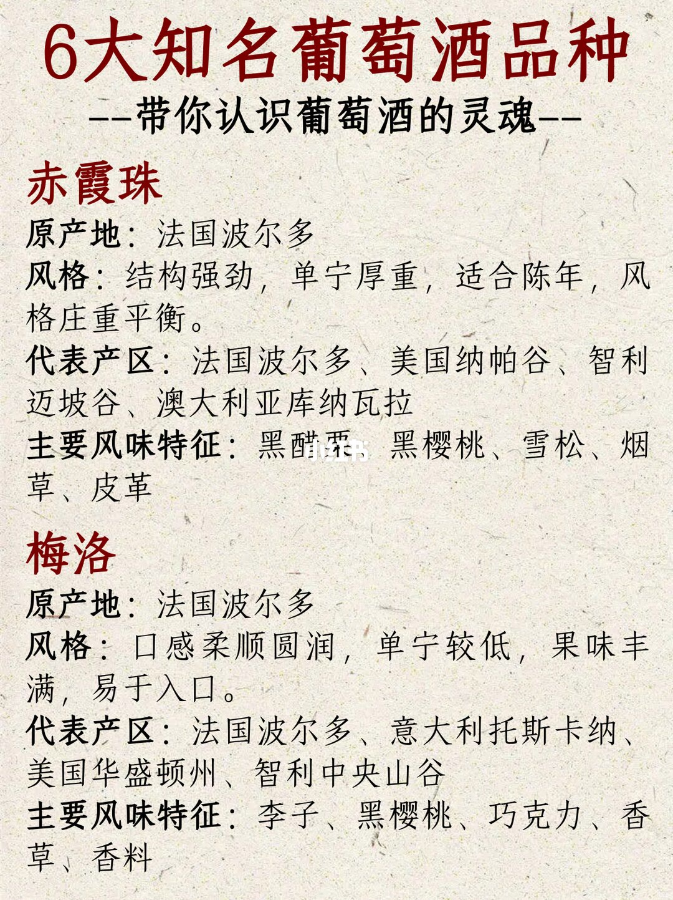
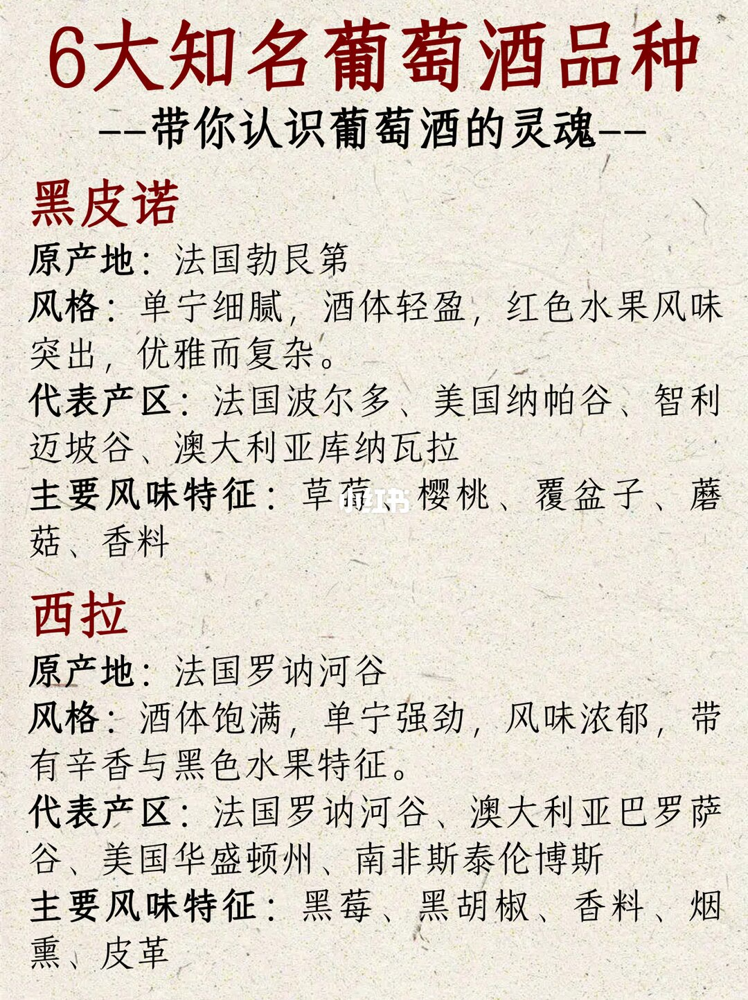
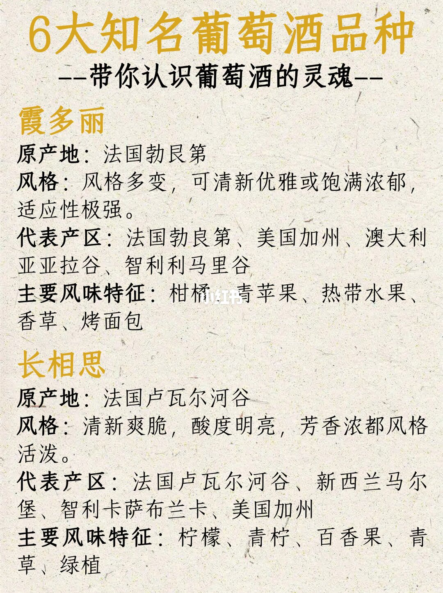

1/3
赤霞珠和梅洛：原产地都写波尔多

赤霞珠：原产地法国波尔多。风格写结构强劲，单宁厚重，适合陈年，风格庄重平衡。代表产区是法国波尔多、美国纳帕谷、智利迈坡谷、澳大利亚库纳瓦拉。主要风味特征是黑醋栗、黑樱桃、雪松、烟草、皮革。黑醋栗三个字上压着水印，宋体比对更接近「栗」。
梅洛：原产地也是法国波尔多。风格写口感柔顺圆润，单宁较低，果味丰满，易于入口。代表产区是法国波尔多、意大利托斯卡纳、美国华盛顿州、智利中央山谷。主要风味特征是李子、黑樱桃、巧克力、香草、香料。
2/3
黑皮诺和西拉：原产地分开，产区栏要核对

黑皮诺：原产地法国勃艮第。风格写单宁细腻，酒体轻盈，红色水果风味突出，优雅而复杂。代表产区印的是法国波尔多、美国纳帕谷、智利迈坡谷、澳大利亚库纳瓦拉，与第1页赤霞珠逐字相同。主要风味特征是草莓、樱桃、覆盆子、蘑菇、香料。草莓两字也被水印压住，放大后仍是草莓，不是别的水果。
西拉：原产地法国罗讷河谷。风格写酒体饱满，单宁强劲，风味浓郁，带有辛香与黑色水果特征。代表产区是法国罗讷河谷、澳大利亚巴罗萨谷、美国华盛顿州、南非斯泰伦博斯。主要风味特征是黑莓、黑胡椒、香料、烟熏、皮革。这一页标题只写「西拉」，没有并列别名。
3/3
霞多丽和长相思：两款白葡萄

霞多丽：原产地写成法国勃艮第。风格写风格多变，可清新优雅或饱满浓郁，适应性极强。代表产区第一处写成法国勃良第，后面是美国加州、澳大利亚亚拉谷、智利利马里谷。同一页里「艮」和「良」不是同一个字。主要风味特征是柑橘、青苹果、热带水果、香草、烤面包。柑橘和青苹果之间压着水印，两个词都在。
长相思：原产地法国卢瓦尔河谷。风格写成清新爽脆，酸度明亮，芳香浓都风格活泼。图上这一句是「浓都」，不是「浓郁」。代表产区是法国卢瓦尔河谷、新西兰马尔堡、智利卡萨布兰卡、美国加州。主要风味特征是柠檬、青柠、百香果、青草、绿植。
结论
六款按图上的风格词来记
结论：前两页是四款红葡萄，第三页是两款白葡萄。赤霞珠被写成单宁厚重、适合陈年；梅洛被写成单宁较低、易于入口；黑皮诺被写成酒体轻盈、红色水果；西拉被写成酒体饱满并带辛香和黑色水果；霞多丽被写成清新或饱满都可以；长相思被写成酸度明亮、清新爽脆。
支撑页：赤霞珠、梅洛在第1页；黑皮诺、西拉在第2页；霞多丽、长相思在第3页。每一款的原产地、风格、代表产区、风味都只来自对应那一栏。
边界：图上没有年份、酒庄、价格、配餐和侍酒温度。黑皮诺的代表产区与赤霞珠相同，和它自己的原产地勃艮第对不上，不能把这一行当成产区地图。霞多丽原产地是勃艮第，代表产区写成勃良第。长相思风格句印的是「浓都」。笔记说明文字把西拉写成「西拉/设拉子」，并写了产地、气候会改口感；三页图上没有「设拉子」，也没有举气候例子。